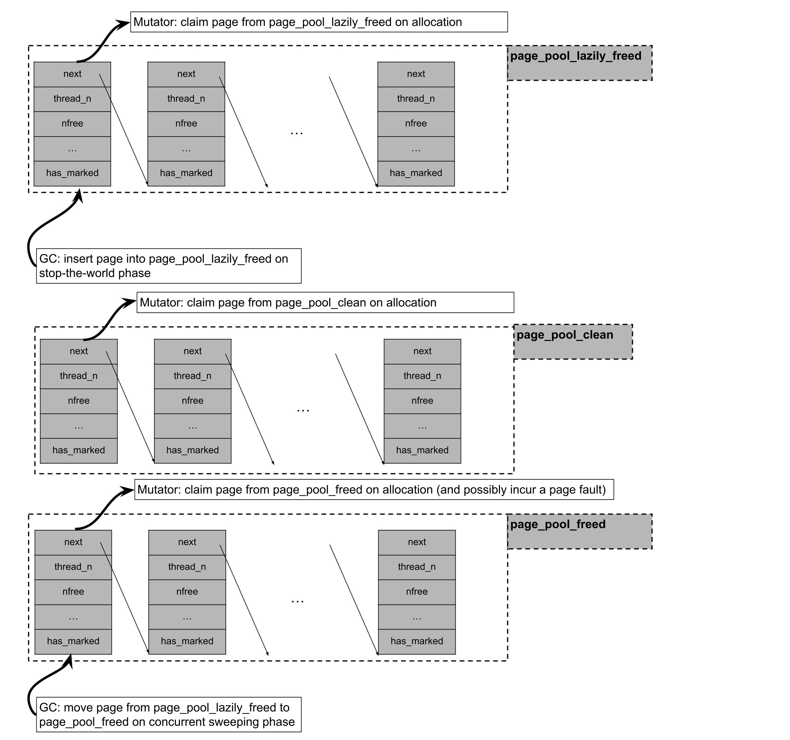

Garbage Collection in Julia
Introduction
Julia は、非移動型で、部分的に並行実行される並列世代別マーク・スイープ GC を採用しています。大部分は正確な GC ですが、C から Julia を呼び出すユーザー向けに、保守的なスタック走査を行うインターフェースもオプションとして用意されています。
Allocation
Julia では、割り当て要求のサイズに応じて使い分ける 2 種類のアロケーターを使用します。2 KiB 以下のオブジェクトは、スレッドごとのフリーリストプールアロケーターで割り当てられます。2 KiB を超えるオブジェクトは、libc の malloc を通じて割り当てられます。
Julia のプールアロケーターは、オブジェクトをサイズクラスごとに分けます。そのため、プールアロケーターが管理するメモリページ（64 ビットプラットフォームでは OS のページ 4 個分）には、同じサイズクラスのオブジェクトだけが格納されます。プールアロケーターの各メモリページには、スレッドごとのロックフリーリストに格納されたページメタデータが対応付けられています。このメタデータには、そのページに生存オブジェクトがあるかどうか、空きスロット数、そのページ内のフリーリストにある先頭および末尾のオブジェクトへのオフセットなどの情報が含まれます。これらのメタデータは、コレクションフェーズの最適化に使われます。たとえば、生存オブジェクトがまったくないページは、走査せずに OS に返却できます。
オブジェクトがないページは OS に返却できますが、それに対応するメタデータは恒久的に割り当てられ、ページ自体より長く存続する場合があります。前述のとおり、割り当て済みページのメタデータはスレッドごとのロックフリーリストに格納されます。一方、空きページのメタデータは、ページがマップされたものの一度もアクセスされていない場合（page_pool_clean）、ページが遅延スイープされ、バックグラウンド GC スレッドによる madvise を待っている場合（page_pool_lazily_freed）、またはページが madvise 済みの場合（page_pool_freed）に応じて、3 つの別々のロックフリーリストのいずれかに格納されます。
Julia のプールアロケーターは、「段階的な」割り当て方式を採用しています。プールアロケーター用のメモリページを要求すると、Julia は次のように処理します。
- まず
page_pool_lazily_freedからページの取得を試みます。このリストには、直近の stop-the-world フェーズでは空だったものの、並行スイーパー GC スレッドによる madvise がまだ行われていないページが含まれます。 page_pool_lazily_freedからページを取得できなかった場合、次にpage_pool_cleanからの取得を試みます。このリストには、以前のページ割り当て要求時に mmap されたものの、一度もアクセスされていないページが含まれます。pool_page_cleanとpage_pool_lazily_freedのどちらからもページを取得できなかった場合、次にpage_pool_freedからの取得を試みます。このリストには、並行スイーパー GC スレッドによる madvise がすでに行われ、基盤となる仮想アドレスを再利用できるページが含まれます。- 上記のいずれの方法でも取得できなかった場合は、ページをまとめて mmap し、そのうち 1 ページを取得して、残りのページを
page_pool_cleanに挿入します。

Marking and Generational Collection
Julia のマークフェーズでは、オブジェクトグラフに対する並列反復型深さ優先探索を行います。Julia の GC は非移動型であるため、オブジェクトの世代は、そのオブジェクトが存在するメモリ領域だけからは判定できません。世代情報は、オブジェクトヘッダーまたはサイドテーブルに何らかの形で記録する必要があります。オブジェクトヘッダーの下位 2 ビットは、それぞれ、マークフェーズでオブジェクトを走査した際にセットされるマークビットと、世代別コレクション用の年齢ビットに使われます。
世代別コレクションはスティッキービットによって実装されています。マークビットがセットされていないオブジェクトだけがマークスタックに積まれ、トレースされます。オブジェクトが最古世代に達すると、いわゆる「クイックスイープ」ではマークビットがリセットされません。そのため、後続のマークフェーズではこれらのオブジェクトはトレースされません。一方、「フルスイープ」ではすべてのオブジェクトのマークビットがリセットされるため、後続のマークフェーズですべてのオブジェクトがトレースされます。オブジェクトは、スイープフェーズを生き残るたびに次の世代へ昇格します。ミューテーター側では、フィールドへの書き込みをライトバリアで捕捉します。書き込み対象のオブジェクトが最終世代にあり、書き込まれるフィールドのオブジェクトが最終世代にない場合、ライトバリアはそのオブジェクトのアドレスをスレッドごとの記憶集合に追加します。この記憶集合内のオブジェクトは、マークフェーズでトレースされます。
Sweeping
Julia のオブジェクトプールのスイープには、2 つの種類があります。プールアロケーターが管理するページに生存オブジェクトが 1 つでもある場合は、そのページ内のデッドオブジェクトをつないでフリーリストを作成する必要があります。ページに生存オブジェクトがまったくない場合は、たとえば Linux の madvise システムコールを使って、そのページの物理メモリを OS に返却できます。
1 つ目の種類のスイープは、ワークスティーリングによって並列化されます。2 つ目の種類のスイープでは、--gcthreads=X,1 フラグによって並行ページスイープが有効になっている場合、ミューテータースレッドと並行してバックグラウンドスイーパー・スレッドから madvise システムコールを実行します。GC の stop-the-world フェーズでは、生存オブジェクトのないプール割り当て済みページが、まず pool_page_lazily_freed に追加されます。その後、バックグラウンドスイープスレッドが起動し、pool_page_lazily_freed からページを取り出して madvise を呼び出し、pool_page_freed に挿入します。前述のとおり、pool_page_lazily_freed はミューテータースレッドとも共有されています。そのため、割り当て負荷の高いマルチスレッドワークロードでは、ミューテータースレッドは pool_page_lazily_freed 内のページから直接割り当てることで、新たに mmap されたページや madvise 済みページへのアクセスに伴う割り当て時のページフォールトを回避できることがよくあります。その一方で、バックグラウンドスイーパー・スレッドが madvise するページ数は、ミューテーターがすでに取得したページがある分だけ少なくなります。
Heuristics
GC ヒューリスティクスは、ガベージコレクション間の割り当て間隔を調整して GC の動作を制御します。
GC ヒューリスティクスは、コレクション後のヒープサイズを測定し、https://dl.acm.org/doi/10.1145/3563323, が説明するアルゴリズムに従って次回のコレクションを設定します。要約すると、このアルゴリズムでは、ヒープの目標サイズは生存ヒープサイズの平方根に比例させ、さらに GC によるオブジェクト解放の速度とミューテーターによる割り当ての速度に応じて調整すべきだとしています。ヒープサイズの測定には、使用中のページ数と malloc で割り当てられたオブジェクト数を数えます。以前は生存オブジェクト数を数えてヒープサイズを測定していましたが、この方法では断片化が考慮されず、判断を誤る可能性がありました。また、プロセス全体に関わる判断（いつ GC を実行するか）に、スレッドローカルな情報（割り当て数）を使っていたことにもなります。ページ数を測定することで、判断をプロセス全体に基づいて行えるようになります。
ヒープサイズが許容最大サイズの 80% に達すると、GC はフルコレクションを実行します。